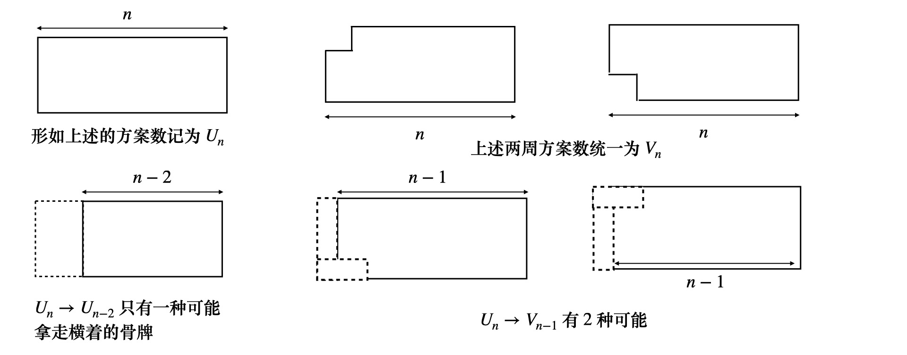
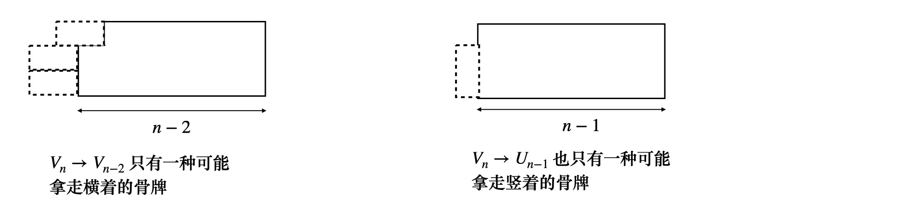

生成函数
斐波那契生成函数
将数列的项映射到多项式，就构成了最简单的生成函数，对于斐波那契数列 F
F(x)=F0+F1x+F2x2+⋯=n⩾0∑Fnxn
F(x)=F0+F1x+xF(x)=F0x+x2F(x)=F2x2+F3x3+F4x4+F5x5+⋯F1x2+F2x3+F3x4+F4x5+⋯F0x2+F1x3+F2x4+F3x5+⋯
注意到 F0=0，并且 Fi=Fi−1+Fi−2
F(x)−xF(x)−x2F(x)=(F1−F0)x=x
生成函数为 F(x)=1−x−x2x
熟练的话，根据递推 an=an−1+an−2 可以推出
[xn]F(x)=x⋅[xn−1]F(x)+x2⋅[xn−2]F(x),n⩾2
特别注意，此时序列不包括 ⟨x0,x1⟩ 的项，减去对应的项即可
[xn]F(x)−F0−F1x=(x⋅[xn−1]F(x)−F0x)+(x2⋅[xn−2]F(x))
即 F(x)=xF(x)+x2F(x)+(F1−F0)x
问题描述
用 2×1 的多米诺骨牌完全覆盖 2×n 的矩形，有多少种不同的方式
设 n=0 时候的方案数为 a0，n=1 方案数为 a1，以此类推，那么将方案数 ai→aixi
映射成多项式的系数，转为研究 f(x)=i=1∑naixi
f(x) 称为序列 ⟨a0,a1,a2,⋯an⟩ 的生成函数
不仅如此，序列 ⟨a0,a1,a2,⋯,an⟩ 还可以表示斐波那契数，斯特林数，卡特兰数等等
以二项式举例，⟨(0r),(1r),(2r),⋯⟩ 生成函数为
(1+x)r=k⩾0∑(kr)xk，同理，(1+x)s=k⩾0∑(sr)xs
令 n←r+s，可以推出 (1+x)r(1+x)s=(1+x)r+s，对应到生成函数，对应到数列第 n 项 xn 的系数
k⩾0∑n(kr)(n−ks)=(nr+s)
这就是范德蒙德卷积
回到一开始的问题
不妨记 n 所对应的方案数为 dp(n)，那么根据第一列骨牌的摆放方式，可以竖着也可以横着
如果竖着放 1 个骨牌，剩下的方案数对应 dp(n−1)，如果横着放 2 个，方案数为 dp(n−2)
dp(n)=dp(n−1)+dp(n−2)，显然是一个斐波那契数列
斐波那契数对应 a0=1,a1=1,a2=1,an=an−2+an−1，求出生成函数为
f(x)=1−x−x2x，原问题对应的方案数 dp(n)=Fn+1
记生成函数 f(x) 中 xn 的系数为 [xn]f(x)，那么有 1−x−x2x=k=0∑n[xk]f(x)⋅xk
原问题对应 xk←xk+1，那么有 1−x−x2x=∑[xk+1]f(x)，可以得到
1−x′−(x′)21=∑[x′k]f(x′)，该问题的生成函数为 f(x)=1−x−x21
多米诺骨牌问题
实际上，探讨 3×n 的多米诺覆盖问题


根据是否允许使用竖着的牌，可以将方案数分为两类，一类是仅允许使用横着的骨牌，另一类是允许使用竖着的骨牌
这两种方案，分别对应到填满 3×n 完整的矩形 Un ，和填满 3×n 但缺一个角的矩形 Vn
如上图所示，有如下递推成立
U0=1,U1=0V0=0,V1=1Un=Un−2+2Vn−1, Vn=Vn−2+Un−1, n⩾2
求解生成函数
这一步用的策略也比较简单，假设说序列 ⟨an⟩ 对应的生成函数是 f(x)，如果有 bn=an−2
那么求解 bn 的生成函数 g(x) 的时候，有 g(x)=x2⋅f(x)，形式化表述为
[xn]g(x)=[xn−2]f(x)，即 [xn−2]x2g(x)=[xn−2]f(x)
于是有 [xn−2]g(x)=[xn−2](x2f(x))，可以推出 g(x)=x2f(x)
首先，将多米诺骨牌的递推写成对所有 n 的形式
Un=2Vn−1+Un−2+[n=0],Vn=Un−1+Vn−2
对应的生成函数有
U(x)=2xV(x)+x2U(x)+1,V(x)=xU(x)+x2V(x)
根据等式可以推出 U(x)=1−4x2+x41−x2, V(x)=1−4x2+x4x
根据 1−4x2+x41 展开，是关于 x2 的幂级数
根据生成函数可以发现，U(x) 是关于 x2 的，也就是说 U2k+1=0，V(x) 是关于 x2⋅x 的，也就是说 V2n=0
展开生成函数
这里可以令 W(x2)=1−4x2+x41，我们有 U(x)=(1−x2)W(x2), V(x)=xW(x2)
如果令 y=x2，那么 (1−x2)W(x2)=W(y)−yW(y)，对于 yn，右边有 [yn]W(y)−y⋅[yn−1]W(y)
左边呢？因为 yn=x2n，所以 [x2n]U(x)=[yn]W(y)−y⋅[yn−1]W(y)
所以我们有 U2n=Wn−Wn−1，同理 [x2n+1]V(x)=[yn]W(y)，即 V2n+1=Wn
那么研究 W(x) 及其展开即可，1−4x+x2=(1−ϕx)(1−ϕ^x)，求出 ϕ=2+3, ϕ^=2−3
由此，我们有 V2n+1=Wn=63+23(2+3)n+63−23(2−3)n
U2n=Wn−Wn−1=63+3(2+3)n+63−3(2−3)n=3−3(2+3)n+3+3(2−3)n
注意到 3+3(2−3)n∈(0,1)，关于 U2n 的表达式简化为
U2n=⌈3−3(2+3)n⌉, n⩾0
正确的答案是取离 U2n 最近的整数得到
换零钱问题
付 50 美分的方案数，假设必须使用 1 美分，5 美分，1 角（10 美分），25 美分以及 50 美分硬币支付
假设只允许使用 1 美分的硬币，此时的方案数为 P
P=1+⟨1⟩+⟨1⟩⟨1⟩+⟨1⟩⟨1⟩⟨1⟩+⟨1⟩⟨1⟩⟨1⟩⟨1⟩+⋯=1+⟨1⟩+⟨1⟩2+⟨1⟩3+⟨1⟩4+⋯
其中每一项表示用几个 1 美分硬币，如果允许使用 5 美分呢？
实际上，对于每一种方案，我们要乘以 (1P)，每一种 5 美分的选择方案，都可以对应到 P 种 1 美分的方案任意选一种
5美分的方案数记为 N，那么
N=P+⟨5⟩P+⟨5⟩⟨5⟩P+⟨5⟩⟨5⟩⟨5⟩P+⟨5⟩⟨5⟩⟨5⟩⟨5⟩P+⋯=(5+⟨5⟩+⟨5⟩2+⟨5⟩3+⟨5⟩4+⋯)P
以此类推，10 美分的方案记为 D，25 美分的方案记为 Q，50 美分的方案记为 C，注意这里的方案是向下兼容的
比如你能用 10 美分的，也能用 1 美分，5 美分的，但不能够用 25 美分的
D=(10+⟨10⟩+⟨10⟩2+⟨10⟩3+⟨10⟩4+⋯)N
Q=(25+⟨25⟩+⟨25⟩2+⟨25⟩3+⟨25⟩4+⋯)D
C=(50+⟨50⟩+⟨50⟩2+⟨50⟩3+⟨50⟩4+⋯)Q
问题就转换成为求解 C 中恰好值 50 美分的项数
考虑使用生成函数，用 x 替代 ⟨1⟩，x50 替代 ⟨50⟩，这样购买 13 美分的方案数为
(⟨1⟩13),(⟨5⟩1,⟨1⟩8),(⟨5⟩2,⟨1⟩3),(⟨10⟩1,⟨1⟩3)
对应的 x13 的系数是 4，综上所述
P=1+x+x2+x3+x4+⋯
N=(1+x5+x10+x15+x20+⋯)P
D=(1+x10+x20+x30+x40+⋯)N
Q=(1+x25+x50+x75+x100+⋯)D
C=(1+x50+x100+x150+x200+⋯)Q
显然 Pn=1，另外可以知道 Nn=⌊n/5⌋+1，Nn 对应支付 n 美分的方案数
可以使用的 5 美分有 (0,1,2,⋯,⌊n/5⌋) 个，5 美分的方案数对应 ⌊n/5⌋+1
剩下 1 美分的方案数是唯一的
注意到 1+xm+x2m+⋯=1/(1−xm)，可以知道
P=1/(1−x)
N=P/(1−x5)
D=N/(1−x10)
Q=D/(1−x25)
C=Q/(1−x50)
可以化为
P=1+xP
N=P+x5N
D=N+x10D
Q=D+x25Q
C=Q+x50C
展开生成函数，可以知道 [xn]P(x)=x⋅[xn−1]P(x)+[n=0]
[xn]N(x)=[xn]P(x)+x5⋅[xn−5]N(x)，以此类推
Pn=Pn−1+[n=0]
Nn=Nn−5+Pn
Dn=Dn−10+Nn
Qn=Qn−25+Dn
Cn=Cn−50+Qn
这样可以递归的来求，比如说 Qn=Dn+Dn−25+Dn−50+Dn−75+⋯
其实 Cn 的封闭形式也很好求，注意到
(1−x)P=1
(1−x5)N=P
(1−x10)D=N
(1−x25)Q=D
(1−x50)C=Q
两边全部乘起来，得到 C=1−x11−x511−x1011−x2511−x501
实际上，(1−x)(1−x2)(1−x3)⋯1 中 xn 的系数为 p(n)，对应 n 的划分的个数
n 的一个划分，即将 n 表示成正整数之和，不考虑顺序
生成函数展开策略
基本展开
二项式展开
二项式比较值得注意的恒等式有如下两种
(1−x)n+11=k⩾0∑(nn+k)xk
这个式子的证明也比较容易，可以通过反转上指标得到，反转上指标的公式如下
rk=r(r−1)⋯(r−k+1)=(−1)k(−r)(−r+1)⋯(k−1−r)=(−1)k(k−1−r)k
反转上指标的规则是
(kr)=(−1)k(kk−r−1)
有了这个规则，实际上 (1−x)−n−1 的展开 xk 系数本来是 (−1)k(k−n−1)，反转上指标后 (kn+k)
很容易得到上式
另外，如果将上述展开式两边同时 ×xn，就得到以下推广
(1−x)n+1xn=k⩾0∑(nk)xk
待定系数展开
对于斐波那契生成函数 f(x)=1−x−x2x，分母二次式可以写成 (1−αx)(1−βx) 形式
1−x−x2x=1−αxA+1−βxB，求解待定系数即可
接下来将 1−αxA+1−βxB 展开成幂级数，k⩾0∑akxk
对应的第 k 项即为 ak=[xk]f(x)
展开求解，容易发现 α,β 分别是 x2−x+1=0 的两个根，α=21+5,β=21−5
令 ϕ=21+5,ϕ^=21−5，代入可知， A=−B，且 A=51
综上所述，可以得到生成函数为 f(x)=51(1−ϕx1−1−ϕ^x1)
展开成幂级数，对于第 n 项斐波那契数，通项为 an=51(ϕn−ϕ^n)
基本策略
F(x),G(x) 分别为 ⟨fn⟩,⟨gn⟩ 的生成函数，对于取负值的 n，令 fn,gn 均为 0
线性和
αF(x)+βG(x)=αn∑fnxn+βn∑gnxn=n∑(αfn+βgn)xn
⟨αfn+βgn⟩ 的生成函数就为 αF(x)+βG(x)
向右平移 m 位
构造 ⟨0,0,⋯,0,g0,g1,⋯⟩=⟨gn−m⟩，实际上，
xmG(x)=n∑gnxn+m=n∑gn−mxn,m⩾0
向左平移 m 位
我们需要减去前 m 项，⟨gm,gm+1,gm+2,⋯⟩=⟨gn+m⟩
xmG(x)−g0−g1x−⋯−gm−1xm−1=n⩾m∑gnxn−m=n⩾0∑gn+mxn
这里因为 g0=g1=⋯=gm−1=0，所以成立
常数倍
G(cx)=n∑gn(cx)n=n∑cngnxn
给出了 ⟨cngn⟩ 的生成函数
微分
G′(x)=g1+2g2x+3g3x2+⋯=n∑(n+1)gn+1xn
给出更普遍的形式
xG′(x)=n∑ngnxn，这是 ⟨ngn⟩ 的生成函数
积分
∫0xG(t)dt=g0x+21g1x2+31g2x3+⋯=n⩾1∑n1gn−1xn
向左平移，给出 ⟨gn/n⟩ 的生成函数 ∫0x(tG(t)−g0)dt
卷积
F(x)G(x)=n∑(k∑fkgn−k)xn
注意到 k<0 时 fk=0， k>n 时 gn−k=0，所以有 ⟨fn⟩,⟨gn⟩ 卷积生成函数
n∑(k=0∑nfkgn−k)xn=F(x)G(x)
特殊卷积
取 F(x)=xm，此时求和式只有一项 fm=1，其他的 f 均为 0，所以 n∑gn−mxn=xmG(x)
取 F(x)=1−x1=1+x+x2+⋯
此时所有的 f 均为 1，我们有
1−x1G(x)=n∑(k=0∑ngn−k)xn=n∑(k⩾n∑gk)xn
用 1/(1−x) 乘以一个生成函数，得到原序列累加和数列的生成函数
常见的生成函数求解举例
fn=⟨1,1,1,⋯⟩⟶n∑xn=1−x1
基于此，我们很容易求出其他生成函数
fn=⟨1,2,3,⋯⟩=1+2x+3x2+⋯=n∑(n+1)⋅1⋅xn
我们知道 gn=⟨1,1,⋯⟩ 的生成函数是 G(x)=1−x1
根据前面微分生成函数，可以知道 fn 的生成函数 F(x)=G′(x)=(1−x)21
fn=⟨1,0,1,0,⋯⟩
注意到该序列只有偶次幂有贡献，令 x←x2，F(x)=1−x21
取给定数列标号为偶数的项，⟨g0,0,g2,0,g4,0,⋯⟩ 有一般性的方法
G(x)+G(−x)=n∑gn(1+(−1)n)xn=2n∑gn[nmod2=0]xn
2G(x)+G(−x)=n∑g2nx2n
类似的，奇数项为
2G(x)−G(−x)=n∑g2n+1x2n+1
比如对斐波那契数列偶数项 ⟨0,1,3,8,⋯⟩ 求生成函数
n∑F2nx2n=21(1−x−x2x+1+x−x2−x)=1−3x2+x4x2
递归式求解
多项式除法
形如 R(x)=Q(x)P(x)
研究 [xn]R(x) 的形式，有一类有理函数，(1−ρx)m+1a=n⩾0∑(mm+n)aρnxn
这样可以构造出一个有限和式 S(x)=(1−ρ1x)m1+1a1+(1−ρ2x)m2+1a2+⋯+(1−ρkx)mk+1ak
展开之后，对于 xn 的系数有 [xn]S(x)=a1(m1m1+n)ρ1n+a2(m2m2+n)ρ2n+⋯+ak(mkmk+n)ρkn
要证明 R(x) 为多项式，必须证明每一个 R(0)=∞ 的有理函数 R(x)=S(x)+T(x)，其中 T(x) 为多项式
注意到当 x=1/ρ1,1/ρ2,⋯,1/ρk 的时候有 S(x)=∞，而 R(x)=S(x)+T(x) 为多项式
取 αk=1/ρk，我们有 xk→αklimS(x)=S(αk)=∞
所以只要证 xk→αklimP(x)/Q(x)=∞
另一方面，P,Q 是多项式，仅当 Q(x)=0 时有 R(x)=∞
由此考虑 xk→αklimQ(x)=Q(αk)=0, αk=1/ρk
对于 Q(x)=q0+q1x+q2x2+⋯+qmxm,(q0=0,qm=0)，其反射多项式为
QR(x)=q0xm+q1xm−1+⋯+qm
二者的关系为 QR(x)=q0(x−ρ1)⋯(x−ρm),Q(x)=q0(1−ρ1x)⋯(1−ρmx)
这样我们可以求出 ρ
不同根的有理展开
若 R(x)=Q(x)P(x)，其中 Q(x)=q0(1−ρ1x)⋯(1−ρkx)，并且 ⟨ρ1,ρ2,⋯,ρk⟩ 不同
如果 P(x) 是次数小于 k 的多项式，那么有
[xn]R(x)=a1ρ1n+⋯+akρkn,(ak=Q′(1/ρk)−ρkP(1/ρk))
证明，实际上只要证 R(x)=P(x)/Q(x) 等于 S(x)=1−ρ1xa1+⋯+1−ρkxak
这一步是根据幂级数展开的等价式
只要证 x→ρk1，即 x→αk, (αk=1/ρk) 时，有 S(x)=R(x)
我们希望能证明 x→αklim(x−αk)R(x)=x→αklim(x−αk)S(x)
x→αklimS(x)=x→αklim1−ρkxa(x−αk)，这是一个 00 极限
应用洛必达法则，可以知道 x→αklimS(x)=−ak/ρk
另外，x→αklim(x−αk)Q(x)P(x)=P(αk)x→αklimQ(x)x−αk=Q′(αk)P(αk)
最后一步同样用了洛必达法则，这样就证明了结论
推广
若 R(x)=Q(x)P(x)，其中 Q(x)=q0(1−ρ1x)d1⋯(1−ρkx)dk，而 ⟨ρ1,ρ2,⋯,ρk⟩ 互不相同
P(x) 是次数小于 d1+d2+⋯+dk 的多项式，那么有
[xn]R(x)=f1(n)ρ1n+⋯+fk(n)ρkn,n⩾0
其中每一个 fk(n) 是一个次数为 dk−1 并且首项系数为
ak=Q(dk)(1/ρk)(−ρk)dkP(1/ρk)dk=(dk−1)!q0∏j=k(1−ρj/ρk)djP(1/ρk)
类似地，实际上令 S(x)=(1−ρ1x)d1a1(d1−1)!+⋯+(1−ρkx)dkak(dk−1)!
我们同样地，只要证 x→αklim(x−αk)dkQ(x)P(x)=x→αklim(x−αk)dkS(x)
其中，dk=max(d1,d2,⋯,dk)
先证右边，根据洛必达法则，x→αklim(x−αk)dk⋅(1−ρkx)dkak(dk−1)!=(−ρk)dkak(dk−1)!
对于左边，x→αklim(x−αk)dkQ(x)P(x)=P(αk)x→αklimQ(dk)(x)dk(dk−1)!
从而 (−ρk)dkak(dk−1)!=Q(dk)(αk)dk(dk−1)!P(αk)
举例，斐波那契数列
P(x)=x,Q(x)=1−x−x2，那么 ρ=ϕ=21+5，ϕn 的系数是 Q′(1/ρ)−ρP(1/ρ)=ρ+2ρ
由此 ϕn 的系数是 ϕ+2ϕ=51，ϕ^n 的系数是 ϕ^+2ϕ^=5−1
Fn=(ϕn−ϕ^n)/5
带随机性的递归式
引入修正因子，比如
g0=g1=1gn=gn−1+2gn−2+(−1)nn⩾2
引入 n<2 的修正因子，gn=gn−1+2gn−2+(−1)n[n⩾0]+[n=1]
技巧，实际上 (−1)n[n⩾0]=n∑(n−1)xn=(1+x)−1
可以推出 G(x)=xG(x)+2x2G(x)+1+x1+x
G(x)=(1−2x)(1+x)21+x+x2
根据扩展定理，ρ1=2，次数 d1=1，ρ2=−1，次数 d2=2
那么 ρ1n 的系数 f1(n)=a1，ρ2n 的系数为 f2(n)=a2n+C
以求解 a2 为例，1/ρ2 代入展开公式，分子直接就是 P(1/ρ2)=1+1/ρ2+(1/ρ2)2=1
分母呢？分母为不包含 d2=2 次的项的乘积，用 x=1/ρ2 代入，并且用 (dk−1)! 来除
(2−1)!⋅(1−2⋅1/ρ2)=3，这样 1/3 就给出了 ndk−1ρkn 的系数
另外，取 n=0，代入可以知道 C=2/9
实际上，关于 n 的系数表达式为 Z(n)=972n+(31n+C)(−1)n
n=0,Z(0)=1，求得
gn=972n+(31n+92)(−1)n
换零钱问题的封闭形式
多项式化简
1−xn=(1−x)(1+x+x2+⋯+xn−1)
C(x)=1−x11−x511−x1011−x2511−x501
实际上，1−x1=1−x51+x+⋯+x4
由此我们有 C(x)=1−x51+x+⋯+x41−x511−x1011−x2511−x501
由此可得
C(x)=(1+x+⋯+x4)C˘(x5)，其中 C˘(x)=1−x11−x11−x211−x511−x101
下面考虑其封闭形式
注意到分母都是 (1−x10) 的一个因子，所以
C˘(x)=(1−x10)5A(x)，其中 A(x)=A0+A1x+⋯+A31x31
实际上，C˘(x)=(1−x)51(1+x)1(1+x+x2+x3+x4)1+(1+x+⋯+x9)1
C˘(x)=(1−x)5(1+x+⋯x9)5(1+x+⋯+x9)4⋅(1+x)1(1+x+⋯+x4)1
可以推出 A(x)=(1+x+⋯+x4)(1+x)(1+x+⋯+x9)4=(1+x+⋯x9)2⋅(1+x)(1+x+⋯+x9)(1+x+⋯+x4)(1+x+⋯+x9)
所以， A(x)=(1+x+⋯+x9)2(1+x+⋯+x8)(1+x5)
展开之后，对于 Ar⋅xr，幂指为 xr 对应的系数记为 Ar，由此构造出向量
A[0⋯31]=⟨1,2,4,6,9,13,18,24,31,39,45,52,57,63,67,6969,67,63,57,52,45,39,31,24,18,13,9,6,4,2,1⟩
很惊奇地发现具有对称性，另外，根据二项式展开，1/(1−x)5=(1−x)−4−1=(44+k)xk
对于 (1−x10)51=k⩾0∑(4k+4)x10k
那么对于 n=10q+r, 0⩽r<10，可以确定系数 C˘n=[xn]C˘(x)
C˘10q+r=j,k∑Aj(4k+4)[10q+r=10k+j]
注意到如下成立
10q+r10(q−1)+r+1010(q−2)+r+2010(q−3)+r+30
依次取 k=⟨q,q−1,q−2,q−3⟩，可以有
C˘10q+r=Ar(4q+4)+Ar+10(4q+3)+Ar+20(4q+2)+Ar+30(4q+1)
那么要求 50 美分的方案就简单了，实际上就是求 C50q=C˘10q
q=1,r=0 代入之后，ans←(45)+45(44)=50
100 美分呢？q=2,r=0 就可以算出来啦
 微信
微信 支付宝
支付宝